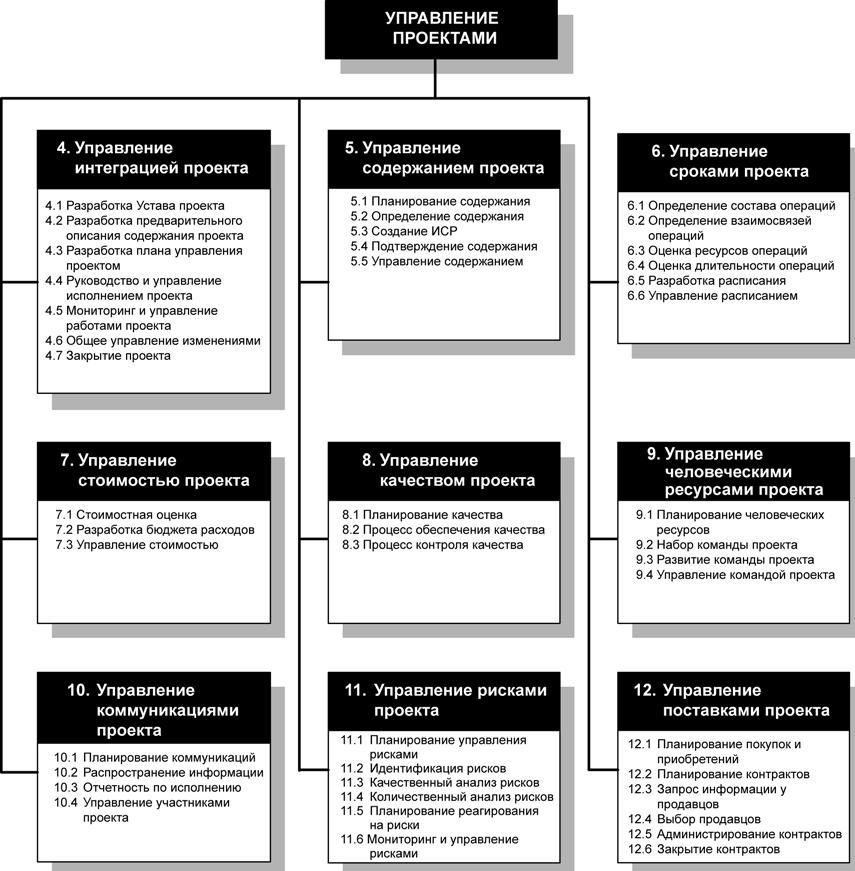
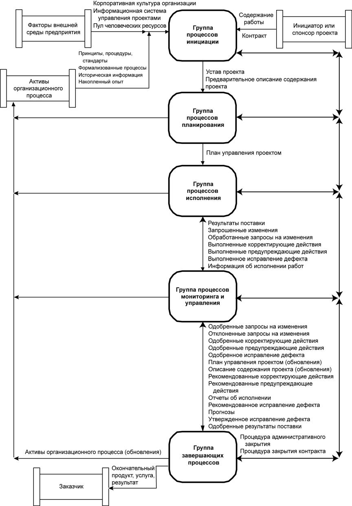

Группы процессов
Группы процессов - это не то же самое, что фазы проекта. Если большие или сложные проекты могут быть разбиты на отдельные фазы или подпроекты, например, анализ осуществимости, разработка идеи, проектирование, создание прототипа, производство, испытание и т.д., то все группы процессов обычно будут применяться к каждой фазе или подпроекту.
Опишем суть процессов управления проектами в терминах интеграции между процессами и взаимодействий между ними, а также цели, которым они служат. Эти процессы разделены на пять групп, называемых "группы процессов управления проектом":
Группа процессов инициации. Определяет и авторизует проект или фазу проекта.
Группа процессов планирования. Определяет и уточняет цели и планирует действия, необходимые для достижения целей и содержания, ради которых был предпринят проект.
Группа процессов исполнения. Объединяет человеческие и другие ресурсы для выполнения плана управления проектом данного проекта.
Группа процессов мониторинга и управления. Регулярно оценивает прогресс проекта и осуществляет мониторинг, чтобы обнаружить отклонения от плана управления проектом, и, в случае необходимости, провести корректирующие действия для достижения целей проекта.
Группа завершающих процессов. Формализует приемку продукта, услуги или результата и подводит проект или фазу проекта к правильному завершению.
Обзор областей знаний по управлению проектами и процессов управления проектами представлен на рисунке 5.1.
На рис.5.2 показан общий обзор взаимодействий между группами процессов, следует учитывать, что не все взаимодействия между процессами и не всепотоки данных между группами процессов представлены на этом рисунке.

Рисунок 5.1 - Обзор областей знаний по управлению проектами и процессов управления проектами

Рисунок 5.2 - Общий обзор взаимодействий между группами процессов